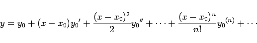
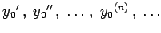
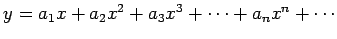
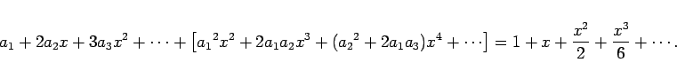

Inhalt Index DeskTop Bronstein

 Differentialgleichungen Gewöhnliche Differentialgleichungen Differentialgleichungen 1. Ordnung Genäherte Integration von Differentialgleichungen 1. Ordnung
Differentialgleichungen Gewöhnliche Differentialgleichungen Differentialgleichungen 1. Ordnung Genäherte Integration von Differentialgleichungen 1. Ordnung


Die TAYLORsche Reihenentwicklung der Lösung einer Differentialgleichung ist in der Form
|  | (9.21) |
darstellbar, wenn die Werte  aller Ableitungen der Lösungsfunktion für den Anfangswert x0 der unabhängigen Variablen bekannt sind. Man kann sie durch sukzessives Differenzieren der Differentialgleichung und Einsetzen der Anfangsbedingung bestimmen. Wenn die Differentiation der Differentialgleichung beliebig oft möglich ist, konvergiert die so gewonnene Reihe in einer gewissen Umgebung des Anfangswertes der unabhängigen Variablen. Man kann diese Methode auch bei der Lösung von Differentialgleichungen n-ter Ordnung einsetzen.
Häufig ist es vorteilhaft, die Lösung in der Form einer Reihe mit unbestimmten Koeffizienten anzusetzen, die mit Hilfe der Bedingung bestimmt werden, daß die Gleichung erfüllt wird, wenn man die Reihe einsetzt.
| Beispiel A |
|
Zur Lösung der Differentialgleichung y'=ex-y2 mit y0=0 für x0=0 kann  gesetzt werden. Einsetzen in die Gleichung liefert unter Berücksichtigung von S2 gemäß (7.81) 
|
| Beispiel B |
|
Die gleiche Differentialgleichung mit der gleichen Anfangsbedingung kann auch folgendermaßen gelöst werden: |